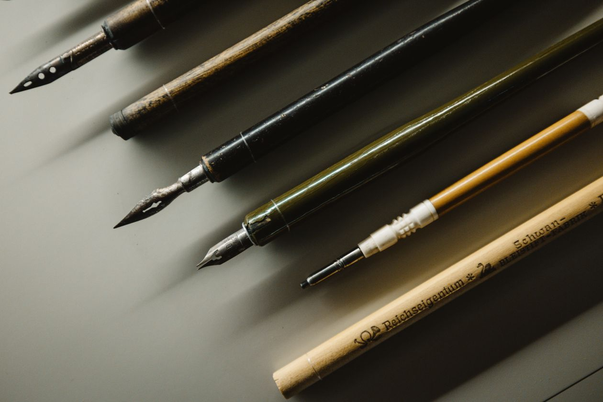

Eleven years at the point of the pen
I am Hannah Whitlock, and Iridium Point is my bench in Norwich. The work began in the repair corner of a family stationer's, where the fountain pens of a whole town came in scratchy, skipping and sprung — and where I learned the trade's first lesson: most nibs are not badly made, they are badly finished, and finishing is patient, measurable work.
From there I trained in a London pen shop's service department and spent two further years doing warranty and restoration work under a retired factory service technician — the generation that was taught to grind on stone, check on the loupe, and sign nothing they had not test-written. My own bench opened in 2016. It now sees around 300 nibs a year, most of them by post, each with its own numbered card.
What the bench does is narrow and stated plainly: tuning, grinding, retipping and tine work on fountain pen nibs. What it does not do is equally plain — barrel and cap repair, filling-system restoration and feed work on vintage pens go to restorers I name on the assessment, because a bench that claims everything is usually honest about nothing. Bench № 246 on the home page is that rule, working in public.
The name is the trade's own shorthand, kept honestly: nibs have been sold as “iridium-pointed” for a century and a half. What the pellet actually is — and is not — is in the glossary below.

The words, in plain terms
Everything the bench charges for, defined the way it is defined on your assessment — including the word on the door.
| Term | What it means | Figures |
|---|---|---|
| Tipping — “iridium” | The hard pellet welded to the nib's point; the only part that touches paper. “Iridium” is the trade's century-old shorthand, not a specification: modern tipping is a platinum-group alloy (platinum, ruthenium, osmium and tungsten in varying mixes) chosen for hardness and corrosion resistance. Pure iridium is almost never the whole story — any seller who insists otherwise is selling. | A new pellet starts ≈ 0.5–0.8 mm across |
| Tines | The two arms of the nib, split by the slit. They must meet level at the point; a step between them is the commonest cause of scratchiness. | Checked at 10× magnification |
| Breather hole | The hole at the top of the slit. It ends the slit so the tines can flex without the metal tearing further. | — |
| Feed | The finned piece under the nib that meters ink to the slit by capillary action. Flow problems are as often the feed's as the nib's. | — |
| Baby's bottom | Tipping rounded on its inner faces, so the ink channel never meets the paper. Skips on upstrokes, starts late. Cured by lapping — not by grinding. | See Bench № 249 |
| Railroading | Two parallel lines with white between: the tines have spread under pressure and the slit writes as two rails. A sign to ease off — or of sprung tines. | — |
| Stub | A grind with a flat, rounded point: wide downstroke, narrow cross-stroke, corners softened. The forgiving way into line variation. | 1.10 down · 0.35 across |
| Cursive italic | Flatter and crisper than a stub, corners lightly softened so it survives an ordinary writing angle. | 0.90 down · 0.20 across |
| Crisp italic | The sharpest italic: maximum variation, corners that punish a rotated grip or a hurried hand. | 0.70 down · 0.15 across |
| Architect | The italic reversed: thin downstrokes, thick cross-strokes. Ground for architectural lettering and for scripts written with horizontal emphasis. | 0.25 down · 1.00 across |
| Needlepoint | A round point ground to the finest practical line. Shaped, never sharpened — a needlepoint that feels like a needle is a fault, not a feature. | 0.25 mm round |
| Flow, 1–10 | The bench's wetness scale, recorded on every card: 1 is a dry writer that grays on fast strokes, 10 floods. Most writers are happiest at 5–7. | Set at the tune |
Care, from the bench side of the counter
Most of what arrives here was preventable. This is the whole of the maintenance a fountain pen asks for — it is less than you fear.
Flush it on a rhythm
Every four to six weeks, or whenever you change ink colour: flush with plain cool water until it runs clear, then a day nib-down on tissue. Dried ink in the feed is the cause of most “my pen stopped writing” parcels.
Store it capped, nib up or flat
Capped, so the nib doesn't dry and the cap can't be knocked off. Nib-up keeps ink out of the cap; flat is fine. Nib-down in a pot is how points get bent.
Iron-gall and pigment inks: flush sooner
Iron-gall inks are traditional, beautiful and mildly corrosive; pigment and waterproof inks dry like paint. Both are welcome in modern pens — with a flush every fortnight, not every month. Keep them out of vintage pens entirely.
Flying with a pen
Travel with the pen either completely full or completely empty — a half-full converter is the one that leaks at altitude. Keep it nib-up in the cabin, never in checked luggage.
If you drop it
Pick it up and look before you write. A test stroke on a bent tine turns a £35 straightening into a retip. Photograph the point and send it — the assessment will tell you which one it is.
Paper is half the partnership
A nib tuned on smooth paper will feel different on rough recycled stock, and very wet flow will feather on cheap paper. Tell the bench what you write on; the tune is set for it.
Never do these
- Lend your pen as a casual favour — a nib wears toward your hand's angle, and another hand's pressure can spring the tines in one signature.
- Press harder to make it write — a fountain pen writes under its own weight; pressure is how tines get sprung and feeds get cracked.
- Write over a hard edge or carbon-copy through it — the point is a pellet of hard alloy, not a nail.
- Soak a vintage pen, or any pen, in hot water or solvents — ebonite, celluloid and casein all have opinions about that.
- “Fix” scratchiness with abrasives from a video — five minutes on the wrong grit removes a decade of tipping.
- Leave ink in a pen you're storing for a season — flush it, dry it, and it will thank you in spring.
Questions the glossary didn't answer?
Send them with the booking form — or just send the form and the photographs, and let the pen ask its own questions.
Book a nib in or write directly: bench@iridiumpoint.example